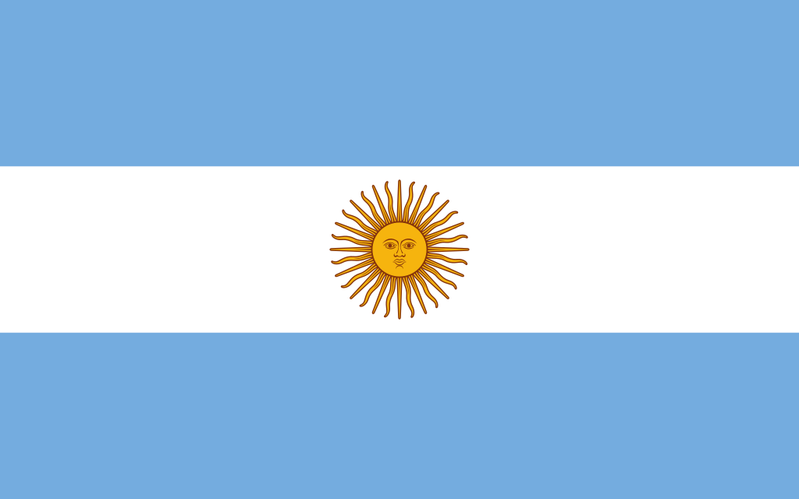

Argentina
 A Argentina, oficialmente República Argentina, é um país localizado na América do Sul, limitado a norte pela Bolívia e Paraguai, a leste pelo Brasil e Uruguai, a oeste pelo Chile e ao sul pelo Oceano Atlântico. Com aproximadamente 2,78 milhões de km², é o segundo maior país do continente e do Hemisfério Sul. Sua capital é Buenos Aires, um importante centro cultural, político e econômico da América Latina. A população argentina é diversa, formada por descendentes de europeus, especialmente italianos e espanhóis, indígenas, africanos e imigrantes de outras partes do mundo, refletindo um mosaico cultural rico. A Argentina é conhecida por sua produção agrícola, indústria automotiva, energia e turismo, além de possuir recursos naturais abundantes, incluindo petróleo, gás, minerais e grandes áreas de terras férteis. O país é membro da ONU, Mercosul, G20 e da Organização dos Estados Americanos (OEA), e sua identidade nacional se construiu a partir de um forte senso de história, cultura e orgulho regional.
História
A história da Argentina é marcada por povos indígenas, colonização europeia, independência e desenvolvimento nacional. Antes da chegada dos espanhóis, diversas etnias indígenas habitavam o território, incluindo os guaranis, mapuches, diaguitas e querandis, cada uma com suas línguas, culturas e sistemas sociais. Com a chegada de Pedro de Mendoza em 1536 e a fundação inicial de Buenos Aires, iniciou-se a colonização espanhola, caracterizada por exploração de recursos naturais, introdução do gado e da agricultura europeia, além da imposição de instituições coloniais.
No século XIX, o movimento de independência ganhou força, liderado por figuras como José de San Martín e Manuel Belgrano, culminando na independência em 9 de julho de 1816. A Argentina passou então por um período de conflitos internos entre unitários e federais, e posteriormente pela consolidação do Estado moderno. O país viveu um rápido crescimento econômico entre o final do século XIX e início do século XX, impulsionado pela imigração europeia e expansão agrícola, tornando-se uma das nações mais prósperas do mundo naquele período. No entanto, instabilidades políticas, golpes militares e crises econômicas marcaram boa parte do século XX, até o retorno à democracia em 1983, com a eleição de Raúl Alfonsín.
Cultura
A cultura argentina é um reflexo da diversidade de suas influências indígenas, europeias e africanas. A música e a dança ocupam um lugar central, destacando-se o tango, que surgiu nos bairros portuários de Buenos Aires e se tornou símbolo nacional e internacional. Outros gêneros musicais populares incluem folklore, chamamé e cumbia, com festivais culturais espalhados por todo o país. A literatura argentina possui grande renome internacional, com autores como Jorge Luis Borges, Julio Cortázar, Adolfo Bioy Casares e Manuel Mujica Lainez, explorando temas como identidade, realidade e fantasia.
A gastronomia argentina é famosa pelo consumo de carne bovina, especialmente o churrasco e as parrilladas, além de pratos tradicionais como empanadas, milanesas e dulces de leche. A língua oficial é o espanhol, com expressões regionais que refletem a herança europeia e indígena. Arquitetonicamente, o país combina estilos coloniais espanhóis, neoclássicos europeus e modernos, visíveis especialmente em Buenos Aires, Córdoba e Mendoza. Festividades como o Carnaval, Semana Santa, Festa Nacional da Tradição e feriados cívicos celebram tanto a diversidade regional quanto a história nacional, mantendo vivas tradições culturais e comunitárias.


Clima
A Argentina possui uma grande diversidade climática devido à sua extensa área territorial, que se estende desde o Trópico de Capricórnio até a Patagônia. No norte, o clima é subtropical com verões quentes e úmidos e invernos suaves. A região central apresenta clima temperado, com quatro estações bem definidas e grande influência da altitude e dos ventos. No sul, na Patagônia e Terra do Fogo, predominam climas frios e ventosos, com invernos rigorosos e verões curtos. Essa diversidade climática permite uma variedade de atividades agrícolas, turísticas e econômicas, influenciando diretamente os ecossistemas e modos de vida locais.
Biodiversidade
A biodiversidade da Argentina é extremamente rica, abrangendo florestas tropicais no norte, pampas férteis no centro, desertos áridos no oeste e ecossistemas frios na Patagônia e Terra do Fogo. O país abriga uma grande variedade de espécies de fauna e flora, incluindo jaguares, guanacos, condores, flamingos e inúmeras espécies endêmicas. Parques nacionais e reservas protegidas, como o Parque Nacional Iguazú, Los Glaciares e Nahuel Huapi, têm como objetivo conservar esses ecossistemas únicos e promover o turismo sustentável.
Os rios, lagos e áreas úmidas também são habitats fundamentais para aves migratórias e espécies aquáticas. A preservação da biodiversidade argentina é essencial não apenas para a manutenção do equilíbrio ecológico, mas também para a pesquisa científica, recreação e economia turística. No entanto, desmatamento, poluição e mudanças climáticas representam desafios contínuos para a conservação ambiental.


Cidades
As cidades argentinas são centros culturais, políticos e econômicos, refletindo a diversidade regional do país. Buenos Aires, a capital, é conhecida como a "Paris da América do Sul" devido à sua arquitetura elegante, vida cultural intensa e forte influência europeia. Córdoba, no centro do país, é um polo universitário e tecnológico, com patrimônio histórico colonial. Mendoza, localizada aos pés da Cordilheira dos Andes, é famosa pela produção de vinhos e turismo de aventura, enquanto Bariloche, na Patagônia, atrai visitantes com suas paisagens montanhosas, esportes de inverno e lagos cristalinos.
Outras cidades importantes incluem Rosario, La Plata, Salta e Ushuaia, cada uma com características únicas que combinam história, cultura e economia. As cidades argentinas funcionam como centros de comércio, educação, turismo e indústria, conectando diferentes regiões do país e garantindo o fluxo de pessoas, bens e cultura em escala nacional e internacional.